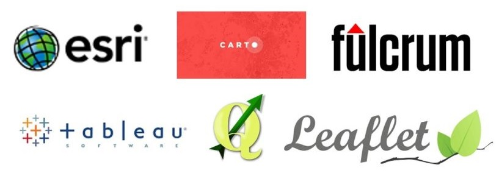

www.ovrdc.org
ovrdc.github.io/gis-tutorials
www.ovrdc.org/gis/presentations
Vector Tiles are a representation (serialized data) of geographic features and their underlying data for a specific zoom level and bounding box. Lines and polygons may be simplified and points may be omitted. ~ Adapted from Wikipedia & Mapbox
MVT is slowly becoming an industry standard.

~70 Image Requests, 1100kb
OpenStreetMap Raster
~45 Image Requests, 749kb
Vector Tile Basemap
~20 Vector Tile requests, 759kb
This includes feature data!!
Transportation Planning Coordinator
Ohio Valley Regional Development Commission
Contact
https://stackoverflow.com/questions/36426428/mapbox-gl-js-3d-elevation-profile http://scottsfarley.com/cartography/coding/2017/02/11/DC-Mapbox-Plugin.html https://blog.mapbox.com/shading-and-lighting-3d-features-in-mapbox-gl-js-e544695cd64 https://blog.mapbox.com/introducing-data-driven-styling-in-mapbox-gl-js-f273121143c3 https://blog.mapbox.com/dive-into-large-datasets-with-3d-shapes-in-mapbox-gl-c89023ef291